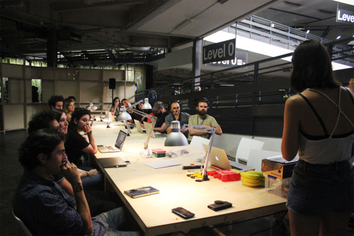
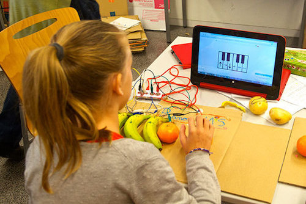
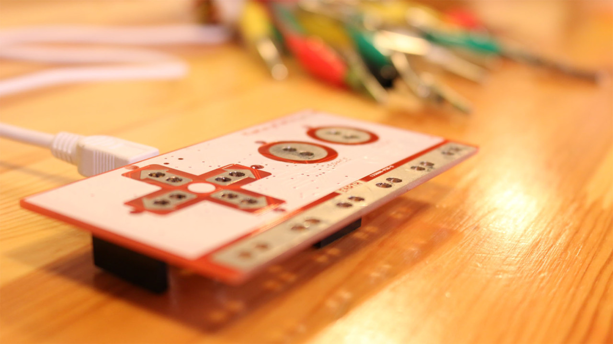
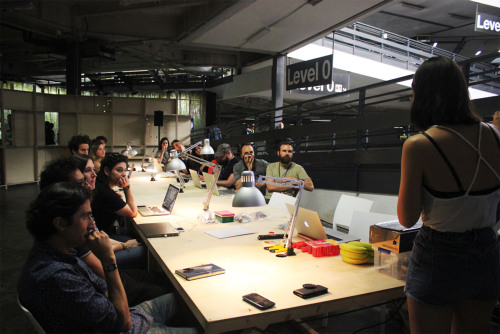
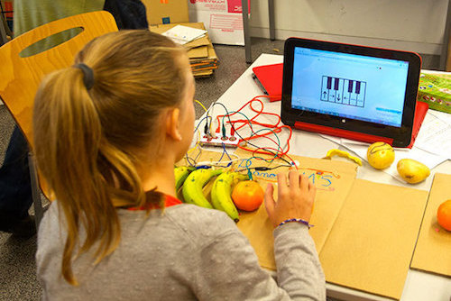
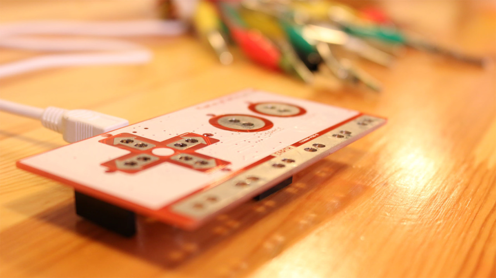

Teaching
Teacher Assistant in Physical Interaction Design and Realization (KTH course DH2400). Managing the lab and teaching digital fabrication techniques (3D printing, laser cutting, etc.) ·· Stockholm, August 2018 - October 2019.
3D printing workshop at Middla ·· Stockholm, September 2019.
Middla manifesto workshop. What are the values of our makerspace?·· Stockholm, February 2019.
Unity and Google Cardboard workshop for teenagers ·· El Prat de Llobregat, December 2016.
Makey Makey workshop at Eufònic festival ·· Sant Carles de la Ràpita, September 2016.
“Introduction to interactive art” workshop at Sónar+D, representing Girls In Lab ·· Barcelona, June 2016.
Volunteer/Teacher at Girls in Lab, teaching and inspiring young girls to code. Teaching workshops with the Makey Makey board and Google Cardboard ·· Barcelona, 2015 - 2016.
 




